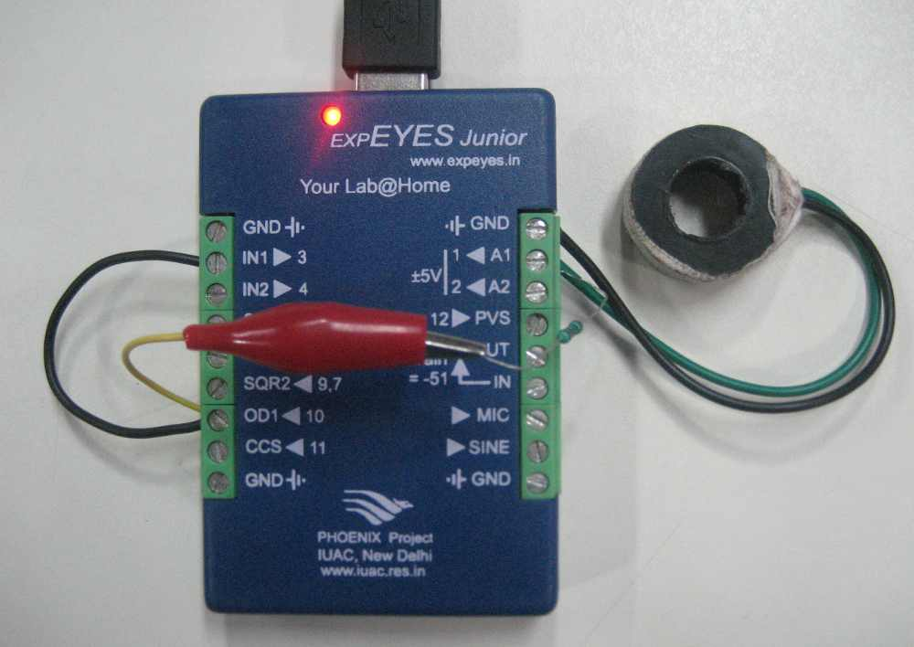
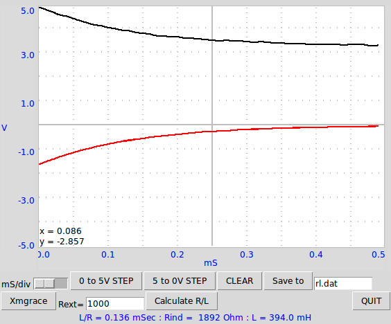

The transient response of an RL circuit is studied by applying a step voltage and observing the voltage across the inductor as a function of time. Connect the resistor from OD1 to A1 and the Inductor from A1 to GND. In response to the 5->0 volt step, the voltage across inductor suddenly goes to around -3 volts (the back EMF) and then discharges exponentially through the resistor. The R/L is extracted by fitting the graph and the value of inductor is obtained. We have used a 1k resistor and a 3000 turns coil of SWG44 wire.
 